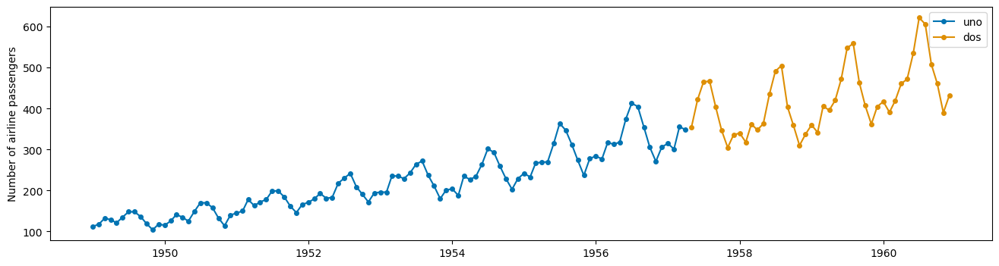
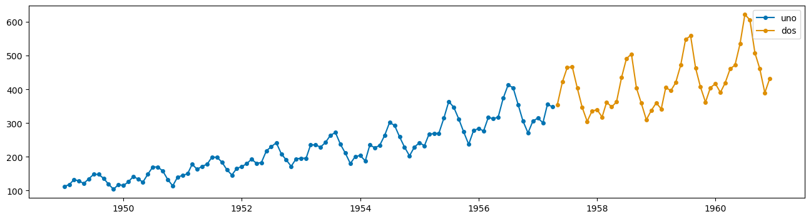
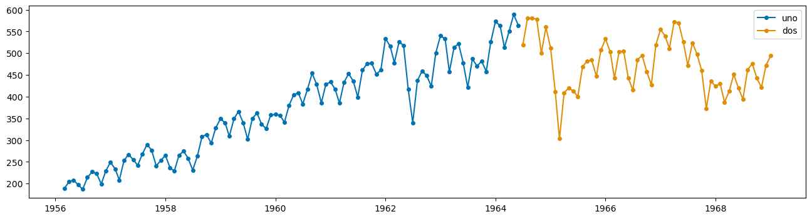
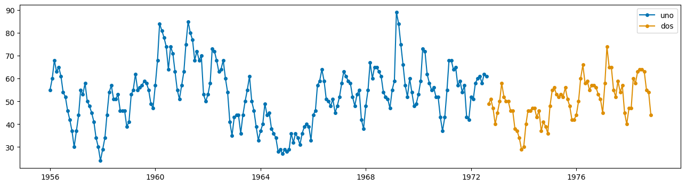
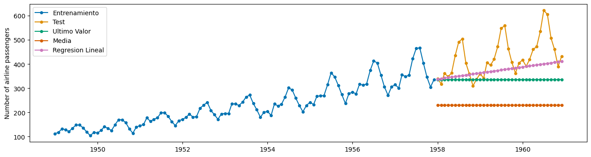
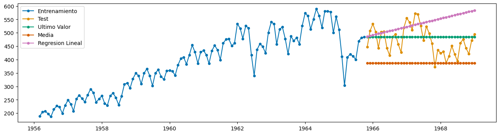
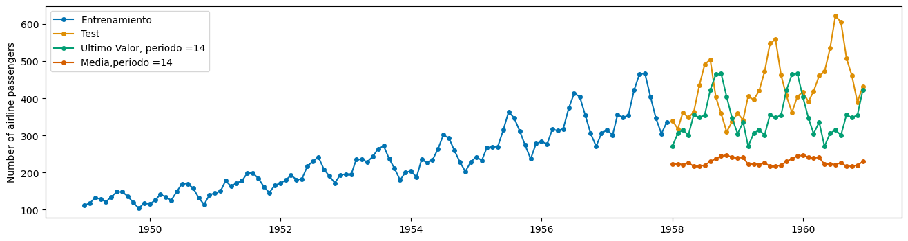
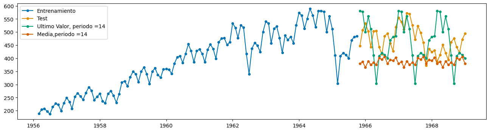
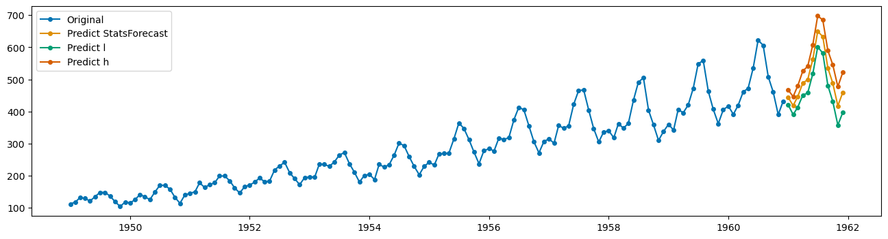

![]()
import numpy as np # Libreria Matematica basica
import pandas as pd # Libreria para manejo, manipulacion y visualizacion de datos
from pandas import read_excel # funcion para leer archivos de excel
import matplotlib as mpl # Libreria para visualizacion de datos y graficas
import matplotlib.pyplot as plt # Funcion para graficar
import seaborn as sns # Libreria para visualizacion de datos
from pandas.plotting import autocorrelation_plot
from statsmodels.tsa.stattools import acf, pacf
from statsmodels.graphics.tsaplots import plot_acf, plot_pacf
from statsmodels.tsa.arima.model import ARIMA
from statsmodels.tsa.seasonal import seasonal_decompose
from statsmodels.tsa.stattools import adfuller
from statsmodels.tsa.arima_process import ArmaProcess
import session_infoTaller - Sesion 4 - Series de Tiempo y Python IIE - UNAM
Abstract
Este Notebook incluye una introduccion al manejo de Series de Tiempo con Python
Keywords
Series de Tiempo, ARIMA, Python, R, Estadistica
import sktime
from sktime import datasets
from sktime.utils import plot_series
from sklearn.linear_model import LinearRegression
import statsmodels.api as smfrom sktime.forecasting.naive import NaiveForecaster
from sktime.forecasting.model_selection import temporal_train_test_splitDatos
df = pd.read_csv('AirPassengers.csv')
df1 = read_excel('ClayBricks.xls')
df2 = read_excel('Electricity.xls')
df3 = read_excel('MilkProduction.xls')
df4 = read_excel('JapaneseCars.xls')
df5 = read_excel('HouseSales.xls')df1| Dates | Bricks | |
|---|---|---|
| 0 | 1956-03-01 | 189 |
| 1 | 1956-04-01 | 204 |
| 2 | 1956-05-01 | 208 |
| 3 | 1956-06-01 | 197 |
| 4 | 1956-07-01 | 187 |
| ... | ... | ... |
| 150 | 1968-09-01 | 476 |
| 151 | 1968-10-01 | 443 |
| 152 | 1968-11-01 | 421 |
| 153 | 1968-12-01 | 472 |
| 154 | 1969-01-01 | 494 |
155 rows × 2 columns
dates=pd.to_datetime(df["Month"])
date1=pd.to_datetime(df1["Dates"])
date2=pd.to_datetime(df2["Month and year"])airline=datasets.load_airline()airlinePeriod
1949-01 112.0
1949-02 118.0
1949-03 132.0
1949-04 129.0
1949-05 121.0
...
1960-08 606.0
1960-09 508.0
1960-10 461.0
1960-11 390.0
1960-12 432.0
Freq: M, Name: Number of airline passengers, Length: 144, dtype: float64type(airline)pandas.core.series.Seriesdf2| Month and year | Kwh | |
|---|---|---|
| 0 | 1956-01-01 | 1254 |
| 1 | 1956-02-01 | 1290 |
| 2 | 1956-03-01 | 1379 |
| 3 | 1956-04-01 | 1346 |
| 4 | 1956-05-01 | 1535 |
| ... | ... | ... |
| 471 | 1995-04-01 | 13032 |
| 472 | 1995-05-01 | 14268 |
| 473 | 1995-06-01 | 14473 |
| 474 | 1995-07-01 | 15359 |
| 475 | 1995-08-01 | 14457 |
476 rows × 2 columns
ts=pd.Series(np.array(df["#Passengers"]),index=dates)
ts1=pd.Series(np.array(df1["Bricks"]),index=date1)
ts2=pd.Series(np.array(df2["Kwh"]),index=date2)
ts3=pd.Series(np.array(df3["Monthly Milk Production per Cow"]))
ts5=pd.Series(np.array(df5["HouseSales"]),index=df5["Month"])ts2Month and year
1956-01-01 1254
1956-02-01 1290
1956-03-01 1379
1956-04-01 1346
1956-05-01 1535
...
1995-04-01 13032
1995-05-01 14268
1995-06-01 14473
1995-07-01 15359
1995-08-01 14457
Length: 476, dtype: int64SkTimes Graficador
plot_series(airline[:100],airline[100:],labels=["uno","dos"])(<Figure size 1600x400 with 1 Axes>,
<Axes: ylabel='Number of airline passengers'>)
plot_series(ts[:100],ts[100:],labels=["uno","dos"])
plot_series(ts1[:100],ts1[100:],labels=["uno","dos"])
plot_series(ts2[:400],ts2[400:],labels=["uno","dos"])
plot_series(ts3[:140],ts3[140:],labels=["uno","dos"])
plot_series(ts5[:200],ts5[200:],labels=["uno","dos"])
Prediccion Naive sin periodo
Aerolineas
AirTrain,AirTest=temporal_train_test_split(airline)predic_Air1=NaiveForecaster(strategy="last")
predic_Air2=NaiveForecaster(strategy="mean")
predic_Air3=NaiveForecaster(strategy="drift")predic_Air1.fit(AirTrain)
predic_Air2.fit(AirTrain)
predic_Air3.fit(AirTrain)NaiveForecaster(strategy='drift')Please rerun this cell to show the HTML repr or trust the notebook.
NaiveForecaster(strategy='drift')
x=np.arange(1,len(AirTest)+1)
y1=predic_Air1.predict(x)
y2=predic_Air2.predict(x)
y3=predic_Air3.predict(x)plot_series(AirTrain,AirTest,y1,y2,y3,labels=["Entrenamiento","Test","Ultimo Valor","Media","Regresion Lineal"])(<Figure size 1600x400 with 1 Axes>,
<Axes: ylabel='Number of airline passengers'>)
Ladrillos
ts1.index = ts1.index.to_period(freq="M")ts1_Train,ts1_Test=temporal_train_test_split(ts1)predic_ts11=NaiveForecaster(strategy="last")
predic_ts12=NaiveForecaster(strategy="mean")
predic_ts13=NaiveForecaster(strategy="drift")predic_ts11.fit(ts1_Train)
predic_ts12.fit(ts1_Train)
predic_ts13.fit(ts1_Train)NaiveForecaster(strategy='drift')Please rerun this cell to show the HTML repr or trust the notebook.
NaiveForecaster(strategy='drift')
x=np.arange(1,len(ts1_Test)+1)
y1=predic_ts11.predict(x)
y2=predic_ts12.predict(x)
y3=predic_ts13.predict(x)plot_series(ts1_Train,ts1_Test,y1,y2,y3,labels=["Entrenamiento","Test","Ultimo Valor","Media","Regresion Lineal"])
Prediccion con Periodos
predic_Air21=NaiveForecaster(strategy="last",sp=14)
predic_Air22=NaiveForecaster(strategy="mean",sp=14)
predic_Air21.fit(AirTrain)
predic_Air22.fit(AirTrain)
x=np.arange(1,len(AirTest)+1)
y21=predic_Air21.predict(x)
y22=predic_Air22.predict(x)
plot_series(AirTrain,AirTest,y21,y22,labels=["Entrenamiento","Test","Ultimo Valor, periodo =14","Media,periodo =14"])(<Figure size 1600x400 with 1 Axes>,
<Axes: ylabel='Number of airline passengers'>)
predic_ts1_21=NaiveForecaster(strategy="last",sp=14)
predic_ts1_22=NaiveForecaster(strategy="mean",sp=14)
predic_ts1_21.fit(ts1_Train)
predic_ts1_22.fit(ts1_Train)
x=np.arange(1,len(ts1_Test)+1)
y21=predic_ts1_21.predict(x)
y22=predic_ts1_22.predict(x)
plot_series(ts1_Train,ts1_Test,y21,y22,labels=["Entrenamiento","Test","Ultimo Valor, periodo =14","Media,periodo =14"])
from statsforecast import StatsForecast
from statsforecast.models import AutoARIMA
from statsforecast.utils import AirPassengersDF/home/leag555/anaconda3/lib/python3.13/site-packages/fs/__init__.py:4: UserWarning: pkg_resources is deprecated as an API. See https://setuptools.pypa.io/en/latest/pkg_resources.html. The pkg_resources package is slated for removal as early as 2025-11-30. Refrain from using this package or pin to Setuptools<81.
__import__("pkg_resources").declare_namespace(__name__) # type: ignoredf.columns=["ds","y"]df| ds | y | |
|---|---|---|
| 0 | 1949-01 | 112 |
| 1 | 1949-02 | 118 |
| 2 | 1949-03 | 132 |
| 3 | 1949-04 | 129 |
| 4 | 1949-05 | 121 |
| ... | ... | ... |
| 139 | 1960-08 | 606 |
| 140 | 1960-09 | 508 |
| 141 | 1960-10 | 461 |
| 142 | 1960-11 | 390 |
| 143 | 1960-12 | 432 |
144 rows × 2 columns
df.insert(0, 'unique_id', len(df)*["AirPassengers"])df| unique_id | ds | y | |
|---|---|---|---|
| 0 | AirPassengers | 1949-01 | 112 |
| 1 | AirPassengers | 1949-02 | 118 |
| 2 | AirPassengers | 1949-03 | 132 |
| 3 | AirPassengers | 1949-04 | 129 |
| 4 | AirPassengers | 1949-05 | 121 |
| ... | ... | ... | ... |
| 139 | AirPassengers | 1960-08 | 606 |
| 140 | AirPassengers | 1960-09 | 508 |
| 141 | AirPassengers | 1960-10 | 461 |
| 142 | AirPassengers | 1960-11 | 390 |
| 143 | AirPassengers | 1960-12 | 432 |
144 rows × 3 columns
sf = StatsForecast(
models=[AutoARIMA(season_length=12)],
freq='ME',
)
sf.fit(df)
dff_forecast=sf.predict(h=12, level=[95])dff_forecast| unique_id | ds | AutoARIMA | AutoARIMA-lo-95 | AutoARIMA-hi-95 | |
|---|---|---|---|---|---|
| 0 | AirPassengers | 1960-12-31 | 444.309570 | 421.279327 | 467.339813 |
| 1 | AirPassengers | 1961-01-31 | 418.213745 | 390.227631 | 446.199829 |
| 2 | AirPassengers | 1961-02-28 | 446.243408 | 412.910034 | 479.576782 |
| 3 | AirPassengers | 1961-03-31 | 488.234222 | 450.621368 | 525.847107 |
| 4 | AirPassengers | 1961-04-30 | 499.237061 | 457.694824 | 540.779297 |
| 5 | AirPassengers | 1961-05-31 | 562.236206 | 517.130981 | 607.341431 |
| 6 | AirPassengers | 1961-06-30 | 649.236450 | 600.822449 | 697.650513 |
| 7 | AirPassengers | 1961-07-31 | 633.236389 | 581.727783 | 684.744934 |
| 8 | AirPassengers | 1961-08-31 | 535.236389 | 480.808289 | 589.664490 |
| 9 | AirPassengers | 1961-09-30 | 488.236389 | 431.037781 | 545.434998 |
| 10 | AirPassengers | 1961-10-31 | 417.236389 | 357.395325 | 477.077454 |
| 11 | AirPassengers | 1961-11-30 | 459.236389 | 396.864746 | 521.608032 |
date_sf=pd.to_datetime(dff_forecast["ds"])
ts_predic_sf=pd.Series(np.array(dff_forecast["AutoARIMA"]),index=date_sf)
ts_predic_sf_h=pd.Series(np.array(dff_forecast["AutoARIMA-hi-95"]),index=date_sf)
ts_predic_sf_l=pd.Series(np.array(dff_forecast["AutoARIMA-lo-95"]),index=date_sf)plot_series(ts,ts_predic_sf,ts_predic_sf_l,ts_predic_sf_h,labels=["Original","Predict StatsForecast","Predict l","Predict h"])
session_info.show(html=False)-----
matplotlib 3.10.6
numpy 2.3.3
pandas 2.3.3
seaborn 0.13.2
session_info v1.0.1
sklearn 1.7.2
sktime 0.38.5
statsforecast 2.0.2
statsmodels 0.14.5
-----
IPython 9.6.0
jupyter_client 8.6.3
jupyter_core 5.8.1
jupyterlab 4.4.9
notebook 7.4.7
-----
Python 3.13.5 | packaged by conda-forge | (main, Jun 16 2025, 08:27:50) [GCC 13.3.0]
Linux-6.8.0-85-generic-x86_64-with-glibc2.39
-----
Session information updated at 2025-10-27 07:11Reuse
Citation
BibTeX citation:
@online{e._ascencio_g.,
author = {E. Ascencio G., Luis},
title = {Taller - {Sesion} 4 - {Series} de {Tiempo} y {Python} {IIE} -
{UNAM}},
volume = {1},
number = {1},
doi = {000000/00000000},
langid = {en},
abstract = {Este Notebook incluye una introduccion al manejo de Series
de Tiempo con Python}
}
For attribution, please cite this work as:
E. Ascencio G., Luis. n.d. “Taller - Sesion 4 - Series de Tiempo y
Python IIE - UNAM.” CIMAT. https://doi.org/000000/00000000.